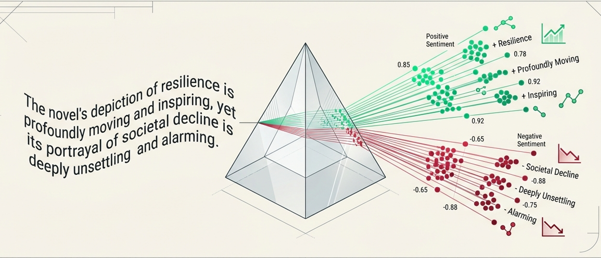
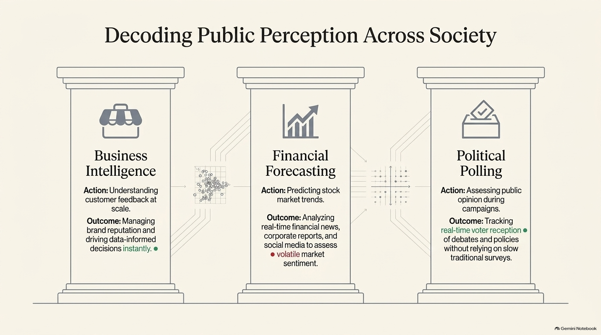
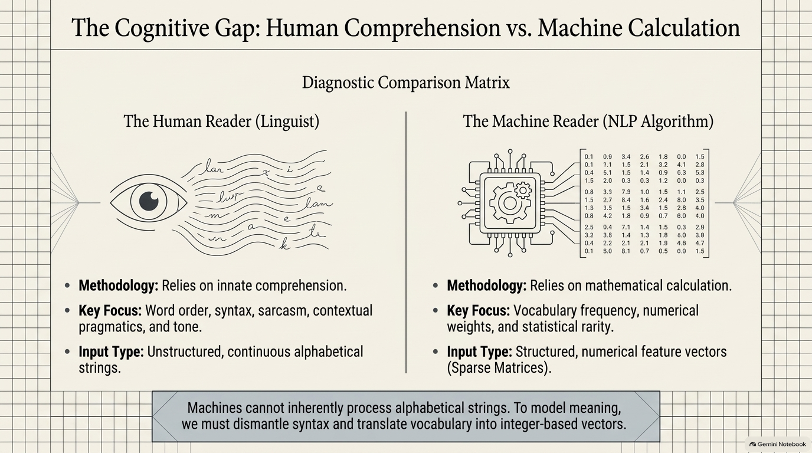
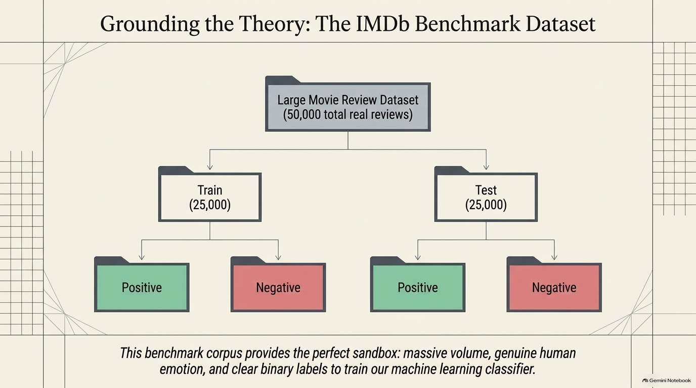
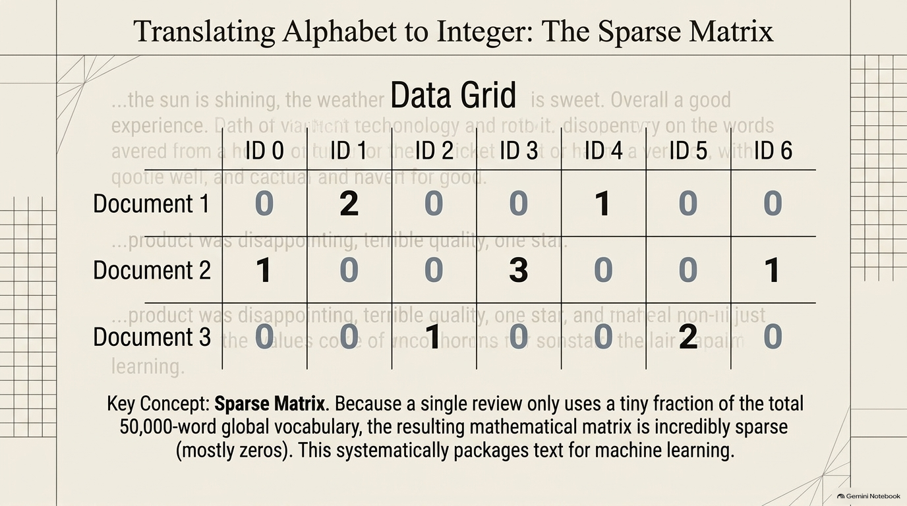
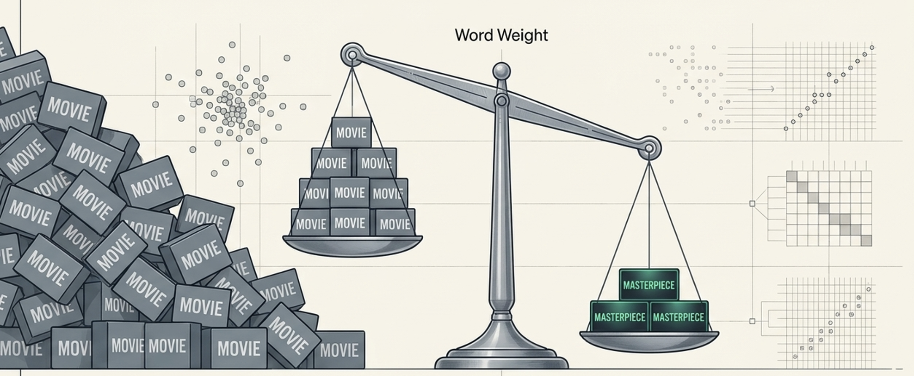

The sun is shining
Opening case
The Hollywood Producer's Dilemma
A blockbuster opens Friday night. By morning, 50,000 reviews are online.
How can the studio know the audience mood now?
Human Language
"The film was breathtaking, but the ending felt rushed."
Machine Representation
0.0450.0110.0380.0780.065
0.0780.0920.1480.3050.018
0.0470.6850.8070.6350.736
0.8570.915rush0.7840.742
0.0420.0720.9070.9810.212
Sentiment map
positive + mixed concern
Research presentation
Sentiment Analysis
How computers transform language, opinion, and emotion into interpretable evidence.
Presenter: Najla Saad Almotiri
Student ID: 202604229
Definition and introduction
What Is Sentiment Analysis?
Sentiment analysis is an NLP task that identifies the evaluative attitude expressed in text.
Working definition:
A computational method for classifying language according to polarity, such as positive, negative, or neutral, and sometimes finer emotions such as joy, anger, sadness, or trust.
- It treats reviews, tweets, comments, and survey answers as language data.
- It asks what stance the writer takes toward a topic, product, event, person, or idea.
- It combines linguistic interpretation with statistical pattern recognition.

Significance
Why It Matters
People now express opinions at a scale no human team can read closely in real time.
ScaleThousands or millions of short texts
SpeedFast public reaction after events
Decision valueEvidence for action
- Business: customer satisfaction, product feedback, brand reputation.
- Media: audience reaction to films, campaigns, and public events.
- Politics: public opinion, policy reception, and debate monitoring.
- Research: corpus-scale patterns of stance and evaluative language.

Section 1
From Language to Data
The central problem: human meaning is continuous and contextual, while machine learning needs structured numerical input.
The linguistic challenge
Humans Read Context. Machines Need Representation.
A human reader notices sarcasm, tone, intensifiers, negation, and context. A basic algorithm sees strings until we convert them.
| Human reader | Machine reader |
|---|---|
| Interprets syntax and discourse | Receives tokens and numbers |
| Understands pragmatic cues | Uses learned statistical patterns |
| Can infer implied meaning | Needs examples, labels, and features |

Research corpus
The IMDb Movie Review Benchmark
A classic teaching example uses 50,000 real movie reviews labeled as positive or negative.
- 25,000 training reviews: examples the model learns from.
- 25,000 test reviews: unseen examples used to check performance.
- Binary labels: positive or negative sentiment.
- Why it helps: movie reviews contain rich evaluative language, not only ratings.

Section 2
Three Techniques, One Flow
BoW counts words. TF-IDF fixes noisy counts. LSA moves from separate words toward hidden topics and meaning.
Technique 1
Bag-of-Words
Documents are broken into tokens; the tokens drop into one vocabulary bag, where order becomes less important than counts.
The weather is sweet
The story is moving
the
sun
is
sweet
moving
story
the
is
sun
sweet
story
moving
the: 3
is: 3
sweet: 1
moving: 1
Feature vectors
The Sparse Matrix
BoW produces a large table of counts: documents as rows, vocabulary items as columns.
- Rows usually represent documents or reviews.
- Columns represent vocabulary items.
- Most cells are zero because each review uses only a small part of the vocabulary.
- Problem: common words can dominate the numbers even when they are not meaningful.

Technique 2
TF-IDF
TF-IDF solves BoW's biggest problem: common words are penalized, distinctive words are rewarded.

masterpiece
High signal
common
distinctive
TF: 1inside this review
IDF: 4.6rare across the corpus
LSA
Latent Semantic Analysis
LSA solves a shared limitation of BoW and TF-IDF: both can treat related words as separate signals.
Core idea
Use SVD to reduce the TF-IDF matrix into fewer hidden dimensions called latent topics.
doctor
hospital
medicine
actor
cinema
screenplay
SVD
For linguistics students
What Sentiment Analysis Can and Cannot Hear
It hears lexical cues
Words such as excellent, awful, inspiring, boring, and disappointing can be strong polarity signals.
It struggles with pragmatics
Sarcasm, irony, indirect criticism, and cultural references often require context beyond word counts.
It depends on domain
"Unpredictable" may be positive for a thriller but negative for a delivery service.
Key point: A sentiment model is not a neutral reader. It reflects the data, labels, language variety, and assumptions used to train it.
Beyond classical baselines
Where the Field Goes Next
1
Lexicon methods
Use dictionaries of positive and negative words.
2
Classical ML
Use Bag-of-Words or TF-IDF with models such as logistic regression.
3
Embeddings
Represent words or sentences in dense numerical spaces.
4
Transformers
Use contextual language models that better handle meaning in context.
Ethical questions remain: privacy, bias, dialect fairness, annotation quality, and whether public emotion should be measured without consent.
Conclusion
Sentiment Analysis Turns Public Language into Interpretable Signals
1It classifies stance and polarity in text.
2It converts language into numerical representations.
3It supports decisions, but still needs human interpretation.
Thank you. Questions are welcome.